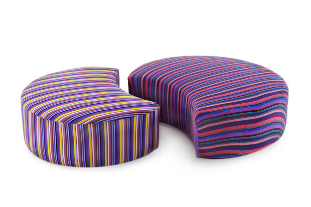

| The elegance of the revolution:
Eclectic, elegant and essential. Piero Lissoni, like all teachers, does
not need too many presentations. When asked what present at the Salone del Mobile has responded as follows: "To Cassina I built an experimental design with furniture made of air " 
|
|
|
Show Code Show Model |